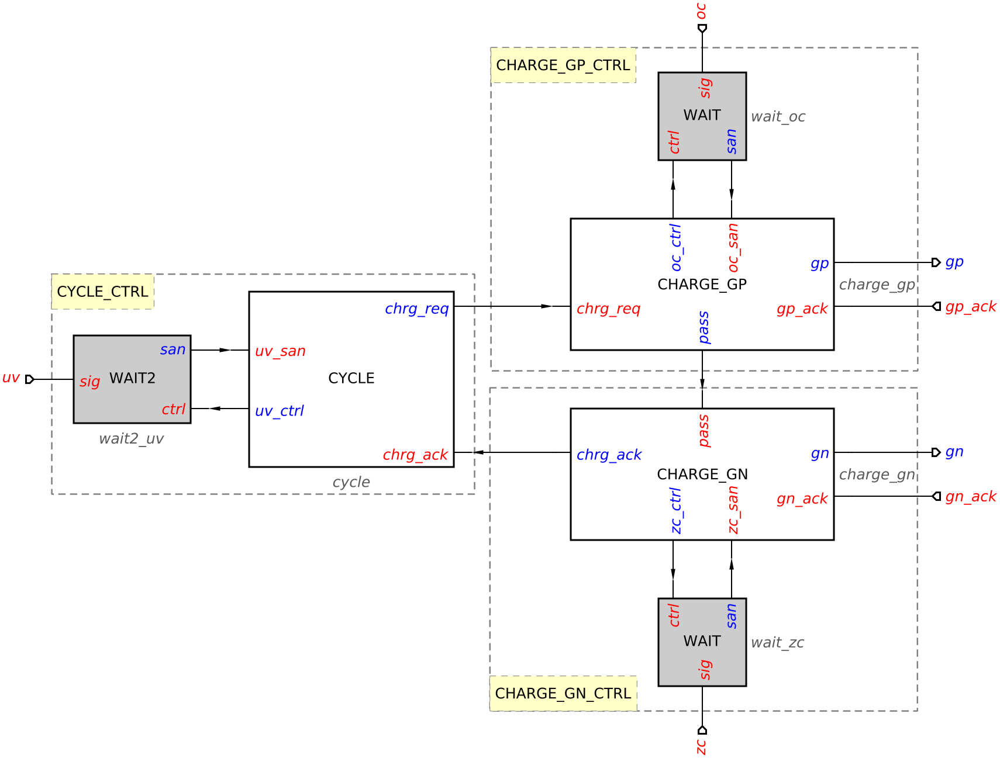
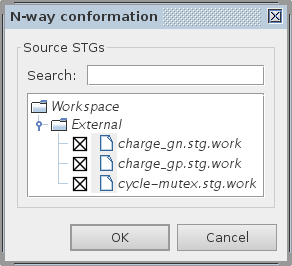
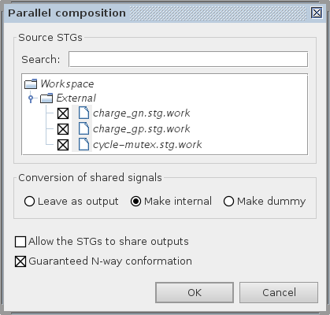
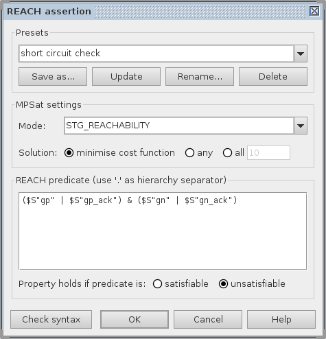
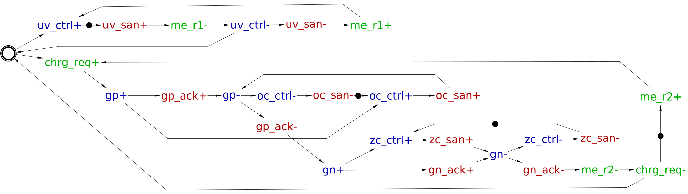
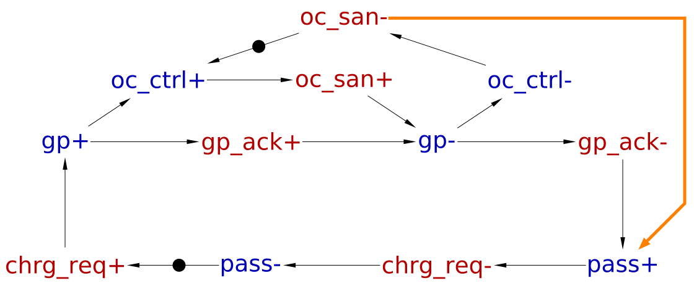

Table of Contents
Verification and synthesis of hierarchical designs
In this tutorial we revisit the hierarchical buck converter to verify the conformation of its modules and learn how their parallel composition can be used for verification of system-wide properties and (sometimes) for deriving a better circuit implementation.
Hierarchical design of a buck controller
Let us start with the following decomposition of the design described in hierarchical buck converter – here the CHARGE module is further decomposed into CHARGE_GP and CHARGE_GN communicating with the help of an extra signal pass:

WAIT and WAIT2 are predefined elements from the library of Asynchronous Arbitration Primitives.
The behaviour of the CYCLE module captured by the below STG is as follows: It waits for under-voltage condition and iteratively calls for a cycle of buck charging while under-voltage persists. When under-voltage condition is resolved there is choice whether to do another cycle of charging or not. The corresponding choice place me is tagged as a mutex place to hint the synthesis that it needs to be implemented by a mutex.
The behaviour of the CYCLE module was explained in the hierarchical buck tutorial and is captured by the following STG:
 |
| STG specification of CYCLE module cycle-mutex.stg.work (4 KiB) |
A charging cycle of a buck has two distinctive phases:
- Upon request
chrg_req+from theCYCLEmodule,CHARGE_GPswitches PMOS power regulating transistor ON and waits for over-current condition atoc_ctrl/oc_saninterface. When over-current is detectedCHARGE_GPswitches PMOS transistor OFF and activatesCHARGE_GNmodule bypass+signal. - Once
CHARGE_GNis activated bypass+signal it switches NMOS transistor OFF and waits for zero-crossing condition onzc_ctrl/zc_saninterface. When zero-crossing is detectedCHARGE_GNswitches NMOS transistor OFF and acknowledges the completion of charging toCYCLEbychrg_ack+.
The STG specifications of CHARGE_GP and CHARGE_GN are as follows:
 |
STG specification of CHARGE_GP modulecharge_gp.stg.work (3 KiB) |
 |
| STG specification of CHARGE_GN module charge_gn.stg.work (3 KiB) |
All these STGs can be verified and synthesised separately. However, it is possible to assemble an incorrect circuit from correct modules; the main focus of this tutorial is to verify and optimise the specification of the overall system.
Verification of N-way conformation
An important system-level property is the conformation of each module to its environment, i.e. the module must never produce outputs that are not expected by its environment. Note that the environment of each module in the case of hierarchical design is the composition of all the other modules, and the property that each module conforms to the composition of all the other modules is called N-way conformation.
Let us verify N-way conformation for the modules of the buck controller. Capture or download the STGs for CYCLE, CHARGE_GPs and CHARGE_GN modules and save them as cycle-mutex.stg.work, charge_gp.stg.work, and charge_gn.stg.work, respectively. Open these three STGs in Workcraft and verify this property via Verification→N-way conformation… menu. In the N-way conformation dialog select the STGs of all the system modules as follows:

Press OK button to start verification. The verification should pass indicating that N-way conformation holds.
As an experiment, change one of the module interfaces, e.g. swap polarity of chrg_ack output in the CHARG_GN (by right-clicking the transitions of this signal and selecting Mirror transition sign in the pop up menu). Note that now each individual module still passes all the standard verification checks, but the overall system is wrong, as CHARG_GN and CYCLE do not agree on the initial value of chrg_ack. Repeating the verification of N-way conformation now yields a violation trace, together with the name of offending signal:

Note that if Play button is pressed, then Workcraft automatically switches to the module STG that produces the unexpected output and initiates its simulation with the reported violation trace.
N-way conformation is checked for all the modules in one go using their parallel composition. The violation trace of the composition is then projected to each module, and the module's state after the projection trace is then checked for any unexpectedly enabled output events, i.e. those events that are enabled in the module but not in the overall composition. If such an event is detected then the module does not conform to its environment. In the above example, output chrg_ack- becomes unexpectedly enabled in CHARGE_GN after the following sequence of events: pass+, gn+, gn_ack+, zc_ctrl+, zc_san+, gn-, gn_ack-.
Report styles for violation traces
In larger designs debugging a violation of N-way conformation is a daunting task due to a large number of modules and complicated interaction between them. Hence Workcraft reports some extra information about the violation trace in the Output pane. The user can choose one of three possible reporting styles using Edit→Preferences…→External tools→MPSat verification→Report style for conformation violation setting.
By default the violation trace is reported as a Table with projections of the trace on each module, one column per module (see the example below):
- The module (work file) names are in the table header.
- The last column represents the names of events in the violation trace.
- If a module participates in executing an event from the last column then its semantics is denoted on the intersection of the event's row and the module's column –
ifor input,ofor output,xfor internal, anddfor dummy. - The last row represents the unexpected event. The receivers not expecting this input are tagged by
!in this row. - Finally, projections of the composition trace on each module are shown as a trace. If the trace triggers an unexpected signal transition then this transition is reported in a warning.
[WARNING] N-way conformation is violated. cycle-mutex.stg | charge_gp.stg | | charge_gn.stg | | | Projected events ----------------------- x . . me_r2+ i . . uv_san+ x . . me_r1- o . . uv_ctrl- o i . chrg_req+ . o . gp+ . i . gp_ack+ . o . oc_ctrl+ . i . oc_san+ . o . gp- . i . gp_ack- . o i pass+ . . o gn+ . . i gn_ack+ . . o zc_ctrl+ . . i zc_san+ . . o gn- . . i gn_ack- ! . o chrg_ack- Legend: i - input; o - output; x - internal; d - dummy; ! - violation Projection to 'cycle-mutex.stg': me_r2+, uv_san+, me_r1-, uv_ctrl-, chrg_req+ Projection to 'charge_gp.stg': chrg_req+, gp+, gp_ack+, oc_ctrl+, oc_san+, gp-, gp_ack-, pass+ Projection to 'charge_gn.stg': pass+, gn+, gn_ack+, zc_ctrl+, zc_san+, gn-, gn_ack- [WARNING] Output 'chrg_ack-' becomes unexpectedly enabled
Another reporting style is List showing the events of the violation trace of the composition, with the names of the modules participating in executing this event (see the example below):
- If the event is a communication event, i.e. not a dummy and not an internal signal, then the sender is reported on the left of
→and the receivers are reported on the right. Note that there is at most one sender (the unique module producing this output, or it arrives from the global environment), and there can be zero or more receivers. - The events local to a particular module (i.e. dummies or internal signals) are reported without
→. - The last row represents the unexpected event; the receivers not expecting this input are reported with
(unexpected)appended to their names. - Finally, projections of the composition trace on each module are shown as a trace. If the trace triggers an unexpected signal transition then this transition is reported in a warning.
[WARNING] N-way conformation is violated. me_r2+ : cycle-mutex.stg uv_san+ : → cycle-mutex.stg me_r1- : cycle-mutex.stg uv_ctrl- : cycle-mutex.stg → chrg_req+ : cycle-mutex.stg → charge_gp.stg gp+ : charge_gp.stg → gp_ack+ : → charge_gp.stg oc_ctrl+ : charge_gp.stg → oc_san+ : → charge_gp.stg gp- : charge_gp.stg → gp_ack- : → charge_gp.stg pass+ : charge_gp.stg → charge_gn.stg gn+ : charge_gn.stg → gn_ack+ : → charge_gn.stg zc_ctrl+ : charge_gn.stg → zc_san+ : → charge_gn.stg gn- : charge_gn.stg → gn_ack- : → charge_gn.stg chrg_ack- : charge_gn.stg → cycle-mutex.stg (unexpected) Projection to 'cycle-mutex.stg': me_r2+, uv_san+, me_r1-, uv_ctrl-, chrg_req+ Projection to 'charge_gp.stg': chrg_req+, gp+, gp_ack+, oc_ctrl+, oc_san+, gp-, gp_ack-, pass+ Projection to 'charge_gn.stg': pass+, gn+, gn_ack+, zc_ctrl+, zc_san+, gn-, gn_ack- [WARNING] Output 'chrg_ack-' becomes unexpectedly enabled
Finally, Brief report style shows a 'raw' violation trace of the composition, its projections on each module, and the offending signal transition:
[WARNING] N-way conformation is violated. Violation trace of the composition: dum1, uv_san+, dum2, uv_ctrl-, chrg_req+, gp+, gp_ack+, oc_ctrl+, oc_san+, gp-, gp_ack-, pass+, gn+, gn_ack+, zc_ctrl+, zc_san+, gn-, gn_ack- Projection to 'cycle-mutex.stg': me_r2+, uv_san+, me_r1-, uv_ctrl-, chrg_req+ Projection to 'charge_gp.stg': chrg_req+, gp+, gp_ack+, oc_ctrl+, oc_san+, gp-, gp_ack-, pass+ Projection to 'charge_gn.stg': pass+, gn+, gn_ack+, zc_ctrl+, zc_san+, gn-, gn_ack- [WARNING] Output 'chrg_ack-' becomes unexpectedly enabled
Parallel composition of module STGs
System decomposition into manageable modules is paramount both for comprehension by designers and for efficient speed-independent implementation by synthesis tools. As long as interface conformation is preserved, the designer can focus on optimisation, verification, and synthesis of individual modules. However, verification of system-wide properties may require crossing the module boundaries, and to accomplish this the parallel composition of all the modules need to be constructed.
Let us build the parallel composition of CYCLE, CHARGE_GP and CHARGE_GN modules. Make sure their STGs are open in Workcraft (do not forget to undo the change of polarity for pass transitions) and select Tools→Composition→Parallel composition [PComp] menu. In the revealed Parallel composition dialog:
- Tick the STGs to be composed, i.e.
charge_gp.stg.work,charge_gn.stg.work, andcycle-mutex.stg.work. - Select Make internal option in order to convert the inter-module communication signals into internal.
- Tick Guaranteed N-way conformation option, as we have already verified this. (This allows the PComp backend to optimise the parallel composition.)
The dialog should look as follows:

Press the OK button to compose these STGs – the result should look similar to this:
 |
| Parallel composition control-composed.stg.work (6 KiB) |
If you did not tick Guaranteed N-way conformation option, then the composed STG may have some redundant places (sometimes implicit within arcs). These places can be removed by resynthesis via Conversion→Net synthesis [Petrify] menu or individually, after checking their redundancy via Check place redundancy popup menu.
System-wide verification
Standard implementability properties
Verify the composition STG using Verification→Consistency, deadlock freeness, input properness, output persistency, and mutex implementability (reuse unfolding) [MPSat] menu (see standard verification properties for details). All these properties must hold for the specification to be implementable as a speed-independent circuit.
Custom short circuit property
For our buck example one must verify that PMOS and NMOS transistors are never ON simultaneously (which would lead to a short circuit). Violation of this custom property can be formulated as a reachability analysis problem using Reach language (see verification of a basic buck controller for details): ($S"gp" | $S"gp_ack") & ($S"gn" | $S"gn_ack"). This property refers to signals of several buck control modules, therefore it has to be checked on the composition of modules.
Let us verify the absence of a short circuit in the composition by defining a new custom property via Verification→REACH assertion [MPSat]… menu. Enter the above Reach predicate in the REACH assertion dialog. Note that the MPSat mode must be set to STG reachability analysis and the predicate must be unsatisfiable for the property to hold:

Pressing the OK button should confirm that the property holds, i.e. no state is reachable that satisfies the short circuit predicate.
Synthesis of the composition
One of the important advantages of hierarchical design is that the modules can be synthesised separately. However, sometimes one can improve the implementation of the overall system by doing cross-boundary optimisations. This is done by composing several tightly coupled modules and synthesising the resulting STG. This may occasionally result in a better circuit because:
- Composed STGs restrict the behaviours of each other, meaning some states become unreachable, adding don't-cares into minimisation tables during logic synthesis.
- The inter-module communication signals can be hidden (turned to dummies and/or contracted), i.e. fewer signals have to be implemented.
Hiding signals does not always result in a smaller circuit. One of the reasons is that hiding may introduce CSC conflicts which have to be resolved, e.g. by inserting new signals. Note that MPSat backend requires CSC conflicts to be explicitly resolved prior to synthesis; Petrify back-end tries to implicitly resolve CSC conflicts before proceeding with the synthesis. For simplicity, in this tutorial we will use Petrify. To use MPSat, resolve CSC conflicts using Tools→Encoding conflicts→… menu, or methods described in the Resolution of encoding (CSC) conflicts tutorial.
Another problem is that Logic decomposition and technology mapping are much more difficult for large STGs.
Let us evaluate the benefits of cross-boundary optimisation for the buck controller. In the composed STG chrg_req, pass, and chrg_ack used to be the inter-module communication signals, and therefore may be redundant in the composition. However, chrg_req is also a mutex output and thus has to be preserved to satisfy the mutex protocol. Therefore, only pass and chrg_ack can be hidden. Select transitions of these two signals (one transition per signal is sufficient) and these signals via the Conversion→Net synthesis hiding selected signals and dummies [Petrify] menu. The simplified STG should look similar to this (note that place me was renamed to p0 by Petrify, but its Mutex tag was automatically restored from the context – in general this is not always possible and might be necessary to do manually):
|  |
| Simplified composition control-simplified.stg.work (5 KiB) |
Verify the obtained STG for the standard speed-independent implementability properties via Verification→Consistency, deadlock freeness, input properness, output persistency, and mutex implementability (reuse unfolding) [MPSat] menu. Then proceed to the technology mapping, e.g. using Petrify (relying on its automatic CSC conflict resolution) – Synthesis→Technology mapping [Petrify] menu (by default gates from libraries/workcraft.lib are used; this can be changed under Gate library for technology mapping option in Model→Digital circuit preference that is accessible via Edit→Preferences… menu).
The area of the resultant circuit (reported via Tools→Statistics→Circuit analysis) is 220 units + MUTEX. For comparison, when the controller modules are synthesised separately, the total area would be 256 units + MUTEX (16+MUTEX for CYCLE, 120 for CHARGE_GP, and 120 for CHARGE_GN), i.e. 14% reduction.
Note that even better results can be achieved by other optimisation techniques, such as concurrency reduction. For example, consider the reset phase of the WAIT elements in CHARGE_GP and CHARGE_GN modules. The reset of WAIT element is just a single gate delay and does not depend on the environment delay. It is quite reasonable to assume this would usually happen faster than switching a large power regulating transistor. Therefore, without sacrificing performance, one can reduce the concurrency of WAIT reset as follows:
|  |
| STG of CHARGE_GP module with concurrency reduction charge_gp-cr.stg.work (3 KiB) |
 |
| STG of CHARGE_GN module with concurrency reduction charge_gn-cr.stg.work (3 KiB) |
This concurrency reduction significantly simplifies the implementations of CHARGE_GP and CHARGE_GN, down to 60 units, so the area of the whole controller is reduced to 136 units. Using the composition technique the area can be further reduced down to 128 units (equivalent to removing a single inverter).
To conclude, hierarchical design is the recommended method for designing controllers with more than a handful of signals. This tutorial explained how to verify system-wide properties of such designs. The simplicity of synthesising individual modules (compared to synthesising the overall system) is a very important advantage of hierarchical designs, making the process much more predictable. Moreover, if cross-boundary optimisation is desirable, one can always automatically derive the STG for the overall system by composing the modules and hiding the inter-module communication. The resulting large STG is likely to be challenging to synthesise, but so would the monolithic specification of the overall system if one did not use the hierarchical approach.
Solutions
Download all the Workcraft models discussed in this tutorial here:
All STGs and circuits (48 KiB)
===== Feedback =====
- As discussed in https://www.dokuwiki.org/plugin:include#controlling_header_size_in_included_pages, by default, the headers in included pages start one level lower than the last header in the current page. This can be tweaked by adding an empty header above the include:\\
====== ====== {{page>:tutorial:feedback&inline}} - For offline help generation the content of
feedbackpage should be temporary wrapped in<WRAP hide>. Note that the headers still propagate to the table of contents even if inside the hidden wrap. Therefore the Feedback title needs to be converted to something else, e.g. to code by adding two spaces in front.